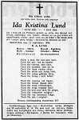

Ida Kristina Hällgren
Blev 72 år.
| Född: | 1881-10-13 Kattisträsk, Norsjö fs, Norsjö sn. [1] |
|---|
| Död: | 1954-09-16 Brännheden 1:5, Bastuträsk kbfd, Norsjö kn. [2] |
|---|
| Vigsel: | 1905-04-15 Kattisträsk 2, Liden, Norsjö fs, Norsjö sn. [3] |
|---|
| Omflyttad till: | 1910 Bastuträsk, Nosjö fs, Norsajö sn. [4] |
|---|
Personhistoria
| Årtal | Ålder | Händelse |
|---|
| 1881 |
|
Födelse 1881-10-13 Kattisträsk, Norsjö fs, Norsjö sn [1] |
| 1905 |
23 år |
Vigsel Per August (P.A.) Gustafsson Lund 1905-04-15 Kattisträsk 2, Liden, Norsjö fs, Norsjö sn [3] |
| 1910 |
|
Omflyttad till Per August (P.A.) Gustafsson Lund 1910 Bastuträsk, Nosjö fs, Norsajö sn [4] |
| 1910 |
28 år |
Dottern Helga Hallly Mariana Lund föds 1910-08-12 Norsjö fs, Norsjö sn [5] |
| 1954 |
72 år |
Död 1954-09-16 Brännheden 1:5, Bastuträsk kbfd, Norsjö kn [2] |
Källor
| [1] | Norsjö AI:8 (1882-1891) fol. 349 |
| |
| | |
| [2] | DB, PA / DOR 52-60 |
| |
| | |
| [3] | Norsjö (AC) AIIa:4 (1900-1912) Bild 670 / sid 57 |
| |
| | |
| [4] | Norsjö (AC) AIIa:4 (1900-1912) Bild 430 / sid 33 |
| |
| | |
| [5] | Mtl Västerbottens län 1971 |
| |
|
 |
| 1954-09-20. Norra Västerbotten |
| |
|  |
| 1954-09-18. Norra Västerbotten |
|

{kind=link}